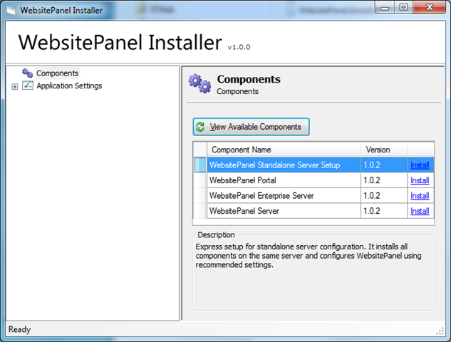
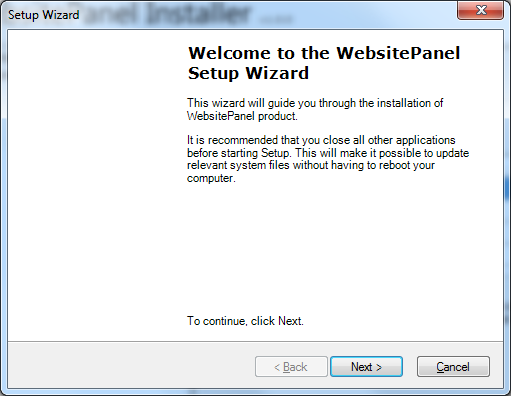
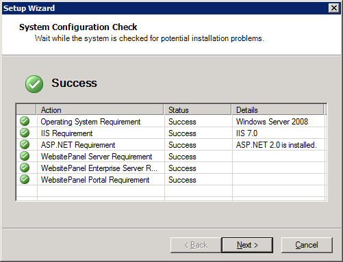
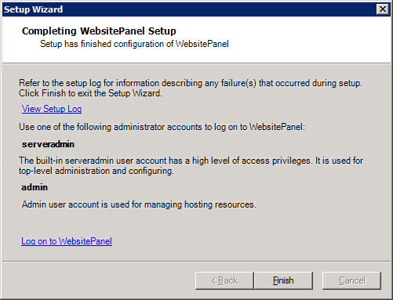
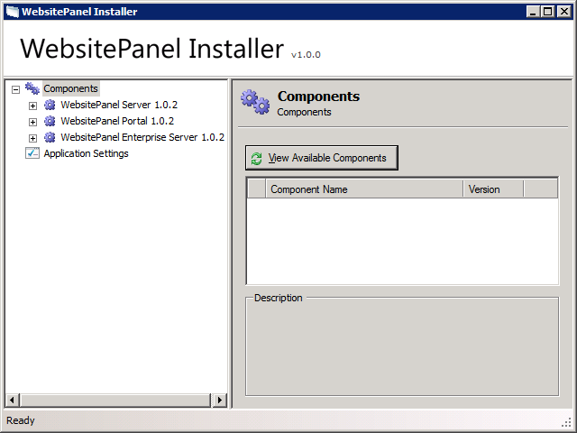
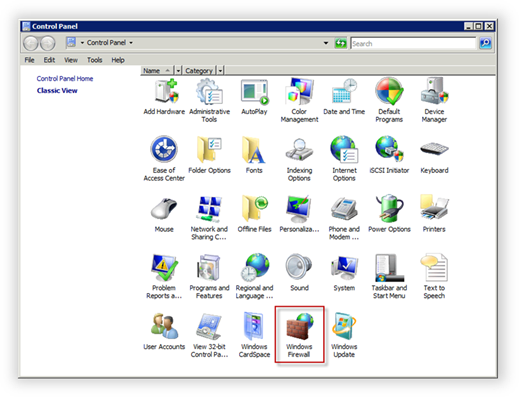
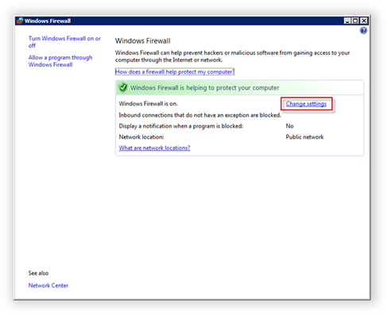
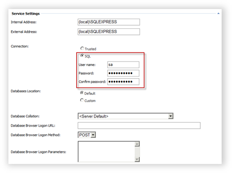
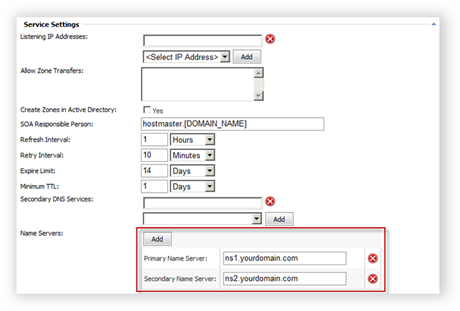

Installing WebsitePanel Standalone Package
Translations:
"Standalone Server Setup" package installs WSP Portal, WSP Enterprise Server and WSP Server components on the server and then automatically configure WebsitePanel installation by registering services, creating hosting plan, user account and hosting space.
"Standalone" installation package is very handful for those customers who would like to use WebsitePanel to manage their dedicated server or VPS.
In order to install "Standalone" package open WSP Installer (WSPI), highlight "Components" node and click "View Available Components" button. Click "Install" link on "Standalone Server Setup" line. Please note that this component will be visible if there are no WSP components installed on the server:

Please be patient as it could take some time to download installation files from WebsitePanel web server.
After installation files are downloaded welcome step of installation wizard will appear:

Click "Next" to continue and then accept WebsitePanel license to proceed with the installation.
WSPI will perform a check for system requirements:

On "Web Settings" step you could specify WebsitePanel web site bindings. The URL shown on this page will be used to access your control panel. If you have a free IP address assigned to the server then we recommend to dedicate it for control panel and specify "80" for the port; otherwise in the case selected IP is shared by several web sites we recommend you to leave default IP address and 9001 port.
Make sure the custom port selected for this web site (9001 in our case) is allowed on server Firewall.
Click "Next" button to switch to the “Database Settings” step. Enter SQL Server, Authentication and Database information and click “Next”.
Specify password for "serveradmin" account. "Serveradmin" account is a root account in WebsitePanel with administrative privileges. Also, this password will be set for "admin" account. "Admin" account belongs to "users" role and you use this account to manage your server resources.
Click "Next" button to install WebsitePanel components.
Three WSP components (Portal, Enterprise Server and Server) will be installed and configured.
After successful installation you will be presented with the following screen:

You could check setup log to see if there any issues and click "Log on to WebsitePanel" link open WebsitePanel sign in screen.
To sign in to control panel use "admin" account with the password specified during the installation.
Click "Finish" button to finish installation wizard. Under "Components" node you will see all three WSP components installed:

Allowing WebsitePanel Portal on Windows Firewall
By default WSP Portal component (User Interface part of WebsitePanel) is installed on 9001 TCP port. To access WebsitePanel from the Internet make sure 9001 port is open on a firewall.
Go to "Control Panel" and open "Windows Firewall" snap-in:

Click "Change settings" link.

Switch to "Exceptions" tab and then click "Add port..." button.
Specify exception name and 9001 port (or other one selected during WSP installation), protocol type is TCP. Click "OK" button twice to save changes and close snap-in.
Configuring SQL Service to Work with Web App Gallery
If you plan to use Web App Gallery module in control panel you have to change SQL Server service settings in WebsitePanel to use SQL authentication.
Login to control panel under "serveradmin" account and open SQL Server service properties page (Configuration -> Servers -> service properties):

Select "SQL" connection option, provide SQL Server administrator user name ("sa" by default), its password and then click "Update" button to save changes.
Configuring DNS Service to Support Custom Name Servers
If you are going to use your custom DNS name servers you have to specify them on DNS service properties in WebsitePanel.
Login to control panel under "serveradmin" account and open DNS service properties page (Configuration -> Servers -> service properties):

Specify your custom name servers in "Name Servers" section. Click "Update" button to save changes.